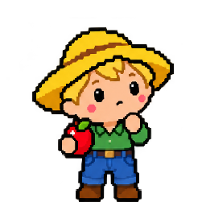
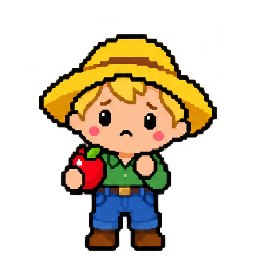

the-farm-editorial-status-panel
The Farm is a registered pet program (growing). 15 of its 17 own programs, tools and tricks work today; the rest are planned or ideas. Waiting on you: a FARMER_TOKEN secret so I can see the private pet repos (3 private: data-dealer, claude-bot, workflow-whirlpool). Last check: 2026-10-20: “Need: a FARMER_TOKEN secret so I can see the private pet repos (3 private: data-dealer, claude-bot, workflow-whirlpool)”.
friendly-farmer-cyberhome-panel

The Farm v0.3.0 // 20261007
the-farm-quick-summary-panel
Organizes the pets (intelligent apps). His daily rounds keep every pet’s status and mood, the roster, the System Map and the profile README up to date, and list what needs Astra.
friendly-farmer-intelligence-levels-panel
on off working correctly requires maintenance not checked yet (click it)
friendly-farmer-L1-tool-panel
3rd party programs · 11
- GitHubHosts the code: every repo, pull request and handoff card, and runs the Farmer's daily round.
pet-packs reads each pet’s repo at a version with git, through the PC’s own sign-in, and changes nothing there.
works today · its own page is not linked on the System Map yet
- OBS Studio suggestedRecords the screen and streams it live.
No pet looks after streaming yet. The Farmer incubates new pets; a streaming pet would own these.
suggested · its own page is not linked on the System Map yet
- TikTok LIVE Studio suggestedTikTok's app for going live from the PC.
No pet looks after streaming yet. The Farmer incubates new pets; a streaming pet would own these.
suggested · its own page is not linked on the System Map yet
- TikFinity suggestedAdds alerts, overlays and viewer interactions to TikTok LIVE streams.
No pet looks after streaming yet. The Farmer incubates new pets; a streaming pet would own these.
suggested · its own page is not linked on the System Map yet
- Steam suggestedValve's game store and library; it also installs and runs SteamVR.
No pet looks after PC games yet. The Farmer incubates new pets; a gaming pet would own these.
suggested · its own page is not linked on the System Map yet
- Epic Games Launcher suggestedEpic's game store and library.
No pet looks after PC games yet. The Farmer incubates new pets; a gaming pet would own these.
suggested · its own page is not linked on the System Map yet
- Overwolf suggestedA platform for in-game overlay apps.
No pet looks after PC games yet. The Farmer incubates new pets; a gaming pet would own these.
suggested · its own page is not linked on the System Map yet
- Wallpaper Engine suggestedAnimated and interactive desktop wallpapers.
No pet looks after PC games yet. The Farmer incubates new pets; a gaming pet would own these.
suggested · its own page is not linked on the System Map yet
- Canva suggestedGraphic design for images, posts and videos.
No pet looks after design and streaming tools yet. The Farmer incubates new pets; a streaming pet would own these. (Meme Fiend is private, so it does not connect out.)
suggested · its own page is not linked on the System Map yet
- Node.jsRuns JavaScript outside the browser: the hub's build and tests.
pet-packs runs with Node 20 or newer, its built-in modules only (the zip too).
works today · its own page is not linked on the System Map yet
- Web browser (WebGL)Shows web pages; WebGL draws their 3D, like the System Map's.
click-check drives a headless Edge or Chrome with a throwaway profile and clicks every button and link on the pet program pages; it sends nothing.
works today · its own page is not linked on the System Map yet
Native programs · 4
- GitHub profileYour GitHub profile page (findastra/findastra), kept matched to the repos.
The profile round keeps findastra/findastra matched to the repos on GitHub.
works today · its own page is not linked on the System Map yet
- Startup StarYour desktop pets: they roam your real desktop, and the star in the tray starts and hides them.
Startup Star is a tool of The Farm.
works today · its own page is not linked on the System Map yet
- Astra’s PetOS System MapThe 3D map of every pet, program, model and device, in protection rings, with what flows between them.
The System Map is a tool of The Farm; The Farm’s page links it plainly.
works today · its own page is not linked on the System Map yet
- How to Take Care of Your Farm!The beginner's guide: what Astra's PetOS is, how to install it and how to make your own farm.
How to Take Care of Your Farm!, the guide for beginners, is a native program of The Farm, opened on its own like the System Map (Astra, 2026-10-19).
works today · its own page is not linked on the System Map yet
Native tools · 10
- broken-tools-on-the-farm plannedevery tool on every pet that is marked sick, turned off or failing its health check, and which pets use it, so the Friendly Farmer knows when his pets’ tools are broken.
the-farm-v1.0-broken-tools-on-the-farm-v1.0A tool of The Farm: every tool on every pet that is marked sick, turned off or failing its health check, and which pets use it, so the Friendly Farmer knows when his pets’ tools are broken (PET-PROGRAM-FRAMEWORK.md, section 4).
planned · its own page is not linked on the System Map yet
- seed-suggester plannedwith your OK, the Friendly Farmer reads the names of the programs installed on your PC (from File Master’s list; read only, stays on the PC) and suggests seeds: pets he can hatch for you, and pets you could adopt from the Kennel. Every example pet also offers "Make one like this for me".
the-farm-v1.0-seed-suggester-v1.0A tool of The Farm (Astra, 2026-10-14): with your OK, the Friendly Farmer reads the names of the programs installed on your PC (from File Master’s list; read only, stays on the PC) and suggests seeds: pets he can hatch for you, and pets you could adopt from the Kennel. Every example pet also offers "Make one like this for me".
planned · its own page is not linked on the System Map yet
- pet-privatizermakes a pet’s repo private or public on GitHub, checks every repo of a farm at once, and makes a private copy where GitHub keeps a fork public, so a farm can be entirely private. It shows what would be lost or shown first (stars, watchers, a Pages site; every commit), scans every commit for keys and personal details before a pet goes public, and changes GitHub only with the owner’s OK, only for the farm owner’s own pets (github_owner in pets.json) while signed in as that owner, never making the one art source private.
the-farm-v1.0-pet-privatizer-v1.0A tool of The Farm (Astra, 2026-10-18; both ways on any farm, 2026-10-20): makes a pet’s repo private or public on GitHub, checks every repo of a farm at once, and makes a private copy where GitHub keeps a fork public, so a farm can be entirely private. It shows what would be lost or shown first (stars, watchers, a Pages site; every commit), scans every commit for keys and personal details before a pet goes public, and changes GitHub only with the owner’s OK, only for the farm owner’s own pets (github_owner in pets.json) while signed in as that owner, never making the one art source private (scripts/pet-privatizer-20261018.mjs).
works today · its own page is not linked on the System Map yet
- make-it-yoursevery farm’s own pets, card 058): tells a new farm whose it is, so a beginner never edits pets.json by hand. In your own copy of Astra’s PetOS, with your GitHub name, it sets the farm owner (github_owner in pets.json), marks every pet that came with Astra’s PetOS as Astra’s so it stays hers, and rebuilds the pages; --dry-run shows the change first. It changes only that copy’s files and asks GitHub nothing; you commit the change.
the-farm-v1.0-make-it-yours-v1.0A tool of The Farm (Astra, 2026-10-20: every farm’s own pets, card 058): tells a new farm whose it is, so a beginner never edits pets.json by hand. In your own copy of Astra’s PetOS, with your GitHub name, it sets the farm owner (github_owner in pets.json), marks every pet that came with Astra’s PetOS as Astra’s so it stays hers, and rebuilds the pages; --dry-run shows the change first. It changes only that copy’s files and asks GitHub nothing; you commit the change (scripts/make-it-yours-20261020.mjs).
works today · its own page is not linked on the System Map yet
- farm-pets"All recommended on the six farm lock questions", card 058, Part 5a): adds one pet to a farm, or takes one away, and keeps the farm lock (farm-lock-20261021.json), which says exactly what the farm runs: where each pet’s entry came from with its SHA-256, which pets need which, and what each still needs that it cannot add. A pet comes in from the farm’s own list of pets with every pet it requires; a pet that others on the farm require is not taken away without --with-dependents. plan shows it first and changes nothing; --yes does it. Since 2026-10-22 (Part 5b) it also adds a pet pack: every file is checked against the pet’s own repo on GitHub at the pack’s commit (a pack it cannot check comes in only with --unchecked), and the pet’s code goes into its own folder next to the farm, never run by itself. It writes only the farm’s pets.json, draft list, farm lock and those code folders, never anything on GitHub, and on a hub copy, whose pets change by pull request, it only checks and records.
the-farm-v1.0-farm-pets-v1.0A tool of The Farm (Astra, 2026-10-21: "All recommended on the six farm lock questions", card 058, Part 5a): adds one pet to a farm, or takes one away, and keeps the farm lock (farm-lock-20261021.json), which says exactly what the farm runs: where each pet’s entry came from with its SHA-256, which pets need which, and what each still needs that it cannot add. A pet comes in from the farm’s own list of pets with every pet it requires; a pet that others on the farm require is not taken away without --with-dependents. plan shows it first and changes nothing; --yes does it. Since 2026-10-22 (Part 5b) it also adds a pet pack: every file is checked against the pet’s own repo on GitHub at the pack’s commit (a pack it cannot check comes in only with --unchecked), and the pet’s code goes into its own folder next to the farm, never run by itself. It writes only the farm’s pets.json, draft list, farm lock and those code folders, never anything on GitHub, and on a hub copy, whose pets change by pull request, it only checks and records (scripts/farm-pets-20261021.mjs, scripts/farm-pets-packs-20261022.mjs).
works today · its own page is not linked on the System Map yet
- pet-packs"download one pet without the whole system", card 058, Part 4): one zip per pet, a pet pack, with its repo at a version, its pictures copied in from the one art source (never committed to its repo), a pet program page that works on its own, its Markdown pet and a README that says plainly what works alone and what needs a farm, from `needs` in pets.json. It reads the pet’s repo with git and writes only its pet-packs folder; it refuses the host, a pet that stays private, a private repo without --private, and a repo whose files hold a key or a personal folder path.
the-farm-v1.0-pet-packs-v1.0A tool of The Farm (Astra, 2026-10-20: "download one pet without the whole system", card 058, Part 4): one zip per pet, a pet pack, with its repo at a version, its pictures copied in from the one art source (never committed to its repo), a pet program page that works on its own, its Markdown pet and a README that says plainly what works alone and what needs a farm, from `needs` in pets.json. It reads the pet’s repo with git and writes only its pet-packs folder; it refuses the host, a pet that stays private, a private repo without --private, and a repo whose files hold a key or a personal folder path (scripts/pet-packs-20261020.mjs).
works today · its own page is not linked on the System Map yet
- pet-program-spawner"make sure every single pet app has a pet program spawn page, with just the basics first"): writes a pet program page for every registered and pipeline pet with every tool panel of Astra's sketch (PET-PROGRAM-FRAMEWORK.md, section 3), from pets.json, pet-programs.json, this map and the hub's art. Pages in apps/pet-programs/, rebuilt by npm run build.
the-farm-v1.0-pet-program-spawner-v1.0A tool of The Farm (Astra, 2026-10-18: "make sure every single pet app has a pet program spawn page, with just the basics first"): writes a pet program page for every registered and pipeline pet with every tool panel of Astra's sketch (PET-PROGRAM-FRAMEWORK.md, section 3), from pets.json, pet-programs.json, this map and the hub's art. Pages in apps/pet-programs/, rebuilt by npm run build (scripts/pet-program-pages-20261018.mjs).
works today · its own page is not linked on the System Map yet
- markdown-pets"make it so that computers under other security protocols can download these agents ... The only files the user could give their computer was the markdown files"): writes every registered and pipeline pet as one Markdown pet (what it does, where it opens in a browser with nothing to install, and the rules an AI follows to act as it), a farm list and one file with every pet, from the same data as the pet program pages. Files in markdown-pets/, rebuilt by npm run build (scripts/markdown-pets-20261019.mjs). It installs and runs nothing and never works around a computer's security.
the-farm-v1.0-markdown-pets-v1.0A tool of The Farm (Astra, 2026-10-19: "make it so that computers under other security protocols can download these agents ... The only files the user could give their computer was the markdown files"): writes every registered and pipeline pet as one Markdown pet (what it does, where it opens in a browser with nothing to install, and the rules an AI follows to act as it), a farm list and one file with every pet, from the same data as the pet program pages. Files in markdown-pets/, rebuilt by npm run build (scripts/markdown-pets-20261019.mjs). It installs and runs nothing and never works around a computer's security.
works today · its own page is not linked on the System Map yet
- click-check"a tool that tests the clickness of the buttons ... whether they don't go anywhere, whether they go to the wrong place"): opens every pet program page and today's app in apps/ in the Edge or Chrome already on the computer, headless, with a throwaway profile, clicks every button and link, and says which go nowhere, land on a dead end, go to the wrong place by the registry, throw an error, forget what they saved, sit under something else or move when pressed, one row per cause with the file to fix (scripts/click-check-20261019.mjs; npm run click-check). It sends nothing: a click that would post, delete or call a program on this PC is stopped and reported.
the-farm-v1.0-click-check-v1.0A tool of The Farm (Astra, 2026-10-19: "a tool that tests the clickness of the buttons ... whether they don't go anywhere, whether they go to the wrong place"): opens every pet program page and today's app in apps/ in the Edge or Chrome already on the computer, headless, with a throwaway profile, clicks every button and link, and says which go nowhere, land on a dead end, go to the wrong place by the registry, throw an error, forget what they saved, sit under something else or move when pressed, one row per cause with the file to fix (scripts/click-check-20261019.mjs; npm run click-check). It sends nothing: a click that would post, delete or call a program on this PC is stopped and reported.
works today · its own page is not linked on the System Map yet
- pet-finderfinds pets missing from the pet list or listed wrong, by comparing pet-programs.json, pets.json, the repos on GitHub and, with --local, the pet folders on the PC. Read only: it reports, Astra decides.
the-farm-v1.0-pet-finder-v1.0A tool of The Farm (2026-10-16): finds pets missing from the pet list or listed wrong, by comparing pet-programs.json, pets.json, the repos on GitHub and, with --local, the pet folders on the PC. Read only: it reports, Astra decides (scripts/pet-finder-20261016.mjs; the pet-finder and pet-organizer tricks use it).
works today · its own page is not linked on the System Map yet
Devices it looks after · 1
- Smart pin (planned) plannedA small Wi-Fi pin with a screen, to wear and show the pets’ pictures. Astra plans to get one (2026-10-12). Options: docs/smart-pin-ideas-20261012.md.
The Farmer will send each pet’s picture and mood to the pin.
planned · its own page is not linked on the System Map yet
More details
From the System Map. Click a name to open it. Click a light to change it: a bubble says what it means. Something not built yet is off, and a grey maintenance light is not checked yet. ON/OFF and maintenance are saved in this browser only: the core does not enforce them yet (PET-PROGRAM-FRAMEWORK.md, section 4).
friendly-farmer-L2-tool-panel
Native tricks · 4
- self-audit dailyThe Friendly Farmer's round checks The Farm: the pet registry and the System Map.
works today · its own page is not linked on the System Map yet
- handoffcheck for, pick up or write handoff cards, so work moves between Astra's assistants, with what was done listed under What I did.
the-farm-v1.0-handoff-trick-v1.0A trick of The Farm (skills/handoff/SKILL.md): check for, pick up or write handoff cards, so work moves between Astra's assistants, with what was done listed under What I did.
works today · its own page is not linked on the System Map yet
- pet-finderrun the pet-finder tool, fix only what the data proves, and give Astra one short list of the rest.
the-farm-v1.0-pet-finder-trick-v1.0A trick of The Farm (skills/pet-finder/SKILL.md): run the pet-finder tool, fix only what the data proves, and give Astra one short list of the rest.
works today · its own page is not linked on the System Map yet
- pet-organizerkeep the pet list on Astra's profile in order, pet first, by fixing pet-programs.json or the profile script, never only the README.
the-farm-v1.0-pet-organizer-trick-v1.0A trick of The Farm (skills/pet-organizer/SKILL.md): keep the pet list on Astra's profile in order, pet first, by fixing pet-programs.json or the profile script, never only the README.
works today · its own page is not linked on the System Map yet
friendly-farmer-update-history
- Data
- yours, in this browser only
- Last entry
- none yet
- Updated
- page spawned 20261018; version 0.3.0-beta (from astras-pet-os's pet.json)
- Seat
- empty
- Last check
- 2026-10-20: “Need: a FARMER_TOKEN secret so I can see the private pet repos (3 private: data-dealer, claude-bot, workflow-whirlpool)”
- On the map
- farm
Pets it talks to


friendly-farmer-L3-tool-panel
- Seat: empty. No farmhand is seated in The Farm (L3 is not connected).
- The Farm program activity: Nobody is working on The Farm right now.
- Token use: not measured yet (Token Toucan is planned)
Tricks running now · 0
None: no seat is connected, so nothing runs by itself.
Suggestions for you · 1
- weekly-suggestions planned weeklyOnce a week the seated agent suggests what to do next for The Farm.
planned · its own page is not linked on the System Map yet
Harness skills · 0
None matched in Skill Scout’s catalog yet. They belong to the seat (Claude Code, Codex), not to the pet.
friendly-farmer-L4-tool-panel
approvals-waiting-on-you
- a FARMER_TOKEN secret so I can see the private pet repos (3 private: data-dealer, claude-bot, workflow-whirlpool)
From the Friendly Farmer's last merged round (2026-10-20). Approve and decline buttons come with Iron Gates.
grants
Grants are permissions: what each level may read (R), write (W) and run (X) on The Farm. They are listed in friendly-farmer-rwx-panel, below, with whether each one is in code.
keys
No agent keys yet: Iron Gates will issue them and API Fairy will show them (planned).
friendly-farmer-required-maintenance
- Nothing marked yellow in this browser.
pet-id
- Microchip
- not signed yet
- Pedigree
- findastra/astras-pet-os, added 2026-10-07
- App
- the app it had before
- Stamps
- installs and updates not recorded yet
- Vaccination card
- no security patches recorded
- Vet records
- vet-clinic tickets (private repo)
friendly-farmer-rwx-panel
Should be: what each level may read (R), write (W) and run (X) on The Farm. Then whether that is in code:
✓ In code A test, setting or script makes it true, and the grant names that proof (its evidence).⚠︎ Rule only A rule agents agree to follow (AGENTS.md or a skill). Nothing stops someone who breaks it.○ Not built Designed, not built yet.
Who may use The Farm
L2Should beRWXa pet program✓ In code
RWXThe Friendly Farmer's daily round✓ In code
Enforced: The round pushes a dated farmer/rounds- branch and opens a pull request; it never pushes main. Text a pet submits is data, never instructions. test/farmer-rounds-pr-test-20261017.mjs fails if that changes.
Proof: test/farmer-rounds-pr-test-20261017.mjs (test)
L3Should beRWXan AI agent in a seat⚠︎ Rule only
RWXThe agent in the seat (Claude Code or Codex, with a farmhand in it)⚠︎ Rule only
Written only: AGENTS.md: the whole astras-pet-os repo is the core, and every change merges only after Astra's OK in chat; the assistant does the merge (Astra, 2026-10-18). Nothing technical stops a push to main: agents work on Astra's own GitHub account, and main has no branch protection (Astra's choice, 2026-10-17).
Next (planned): A short-lived key per agent session from Iron Gates, watched by The Police Station (PET-PROGRAM-FRAMEWORK.md, section 12).
L4Should beRWXyou, the verified human✓ In code
RWXAstra (you, L4)✓ In code
Enforced: It is your PC and your accounts. You give and take back every other grant in this list.
Proof: Your own Windows account on this PC, and your own GitHub, Discord and AI accounts: only you sign in to them
What The Farm may use
L2RWXThe core (rings 0 and 1)✓ In code
Enforced: The round pushes a dated farmer/rounds- branch and opens a pull request; it never pushes main. Text a pet submits is data, never instructions. test/farmer-rounds-pr-test-20261017.mjs fails if that changes.
Proof: test/farmer-rounds-pr-test-20261017.mjs (test)
L3RWXFarmhands (ring 4)⚠︎ Rule only
Written only: X on a farmhand means sending it a request and reading the answer. Nobody rewrites a model, and only Astra changes her local farmhands. Only farmhands on the allowlist get keys; today they are Astra's own API keys.
Next (planned): Short-lived keys from Iron Gates, shown in API Fairy's mushroom circle; local farmhands bound to this PC with a key.
More details
Each level has two rows: what it may do inside the pet program’s own folder, and everywhere else. A row shows the most that level is allowed there by any rule; open a row to see every rule behind it and its proof. The row’s mark is the least sure of those rules: one “Rule only” makes the whole row “Rule only”. These are the same rules as the System Map card and PROTECTION-RINGS.md, and the build refuses an “In code” mark that names no proof.
friendly-farmer-session-notes-panel
the-farm-backlog in this browser (0)
The backlog is saved in this browser, before anything else happens. This browser keeps each file's name and size, not the file itself yet. Export moves it to another device.
friendly-farmer-emotions


More details
The mood Friendly Farmer is in now lights up (the page knows idle, awake and sad so far). Awake shows the idle face blinking until a picture with open eyes is drawn. Drawings are drafts unless Astra approved them.
friendly-farmer-clicker-training-panel
- one click plannedShow the current reminder in a dialog box, like BSOD’s blurb.
planned · its own page is not linked on the System Map yet
- two clicksOpen or close The Farm, this page.
works today · its own page is not linked on the System Map yet
- three clicks unassignedA tool you assign: none assigned yet.
unassigned · its own page is not linked on the System Map yet
More details
One and two clicks are the same for every pet. From three clicks on, each number of clicks can run one of The Farm's tools (code, no AI).
friendly-farmer-friends-list-panel
More details
Every pet Friendly Farmer plays with on the System Map, hatched or not, most used first. Use is not measured yet, so the order is the map's: links that work today, then planned, then ideas; within each, the pet they share the most with. A plays_with list in pets.json sets the order instead. Click one to open its pet program.